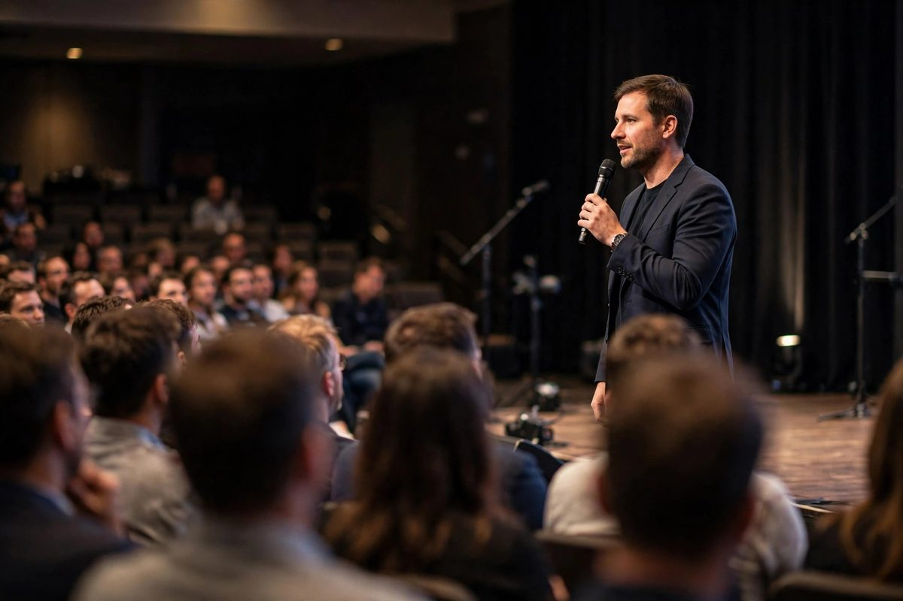

Speech Word Count: How Many Words for a 5-Minute Talk?

Words per minute when speaking
Most speakers deliver 130 to 150 words per minute in a natural, conversational style. That means a five-minute speech needs roughly 650 to 750 words, a ten-minute talk needs 1,300 to 1,500 words, and a twenty-minute presentation needs 2,600 to 3,000 words. These are planning numbers, not exact counts, because delivery speed changes with pauses, emphasis, audience reaction, and nerves.
New speakers usually rush, speaking at 160 words per minute or faster when nervous, which makes a five-minute speech finish in four minutes and sound breathless. Experienced speakers slow down deliberately, using pauses to let important points land. A good rule is to plan for the slower end of the range and rehearse aloud, because a speech that looks right on paper often runs long or short when spoken.
Planning a speech by time
Start with the time limit and work backwards. For a five-minute talk, plan an opening of about 100 words, three main points of about 150 to 180 words each, and a closing of about 100 words. This structure keeps the speech balanced and gives each idea room to breathe. Write the speech in spoken language, with short sentences and simple words, because sentences that read well often sound stiff when spoken aloud.
Mark pauses and emphasis in your notes. A pause after a key sentence is worth more than extra words, and a change of pace signals a change of topic. If your speech includes a story, budget extra time for it, because stories expand in delivery as the speaker adds detail. Rehearse with a timer at least three times, and adjust the text rather than the delivery speed when the timing is off.
Common speech lengths
A wedding toast is usually two to three minutes, or 260 to 450 words, and the best ones are short, warm, and specific. A conference talk is often fifteen to twenty minutes, or 2,000 to 3,000 words, with slides carrying the detail. A TED-style talk of eighteen minutes needs about 2,400 words, which is why TED speakers rehearse so intensively. A eulogy is usually three to five minutes, and a graduation speech five to ten minutes.
Whatever the occasion, finish early rather than late. Audiences forgive a speech that ends a minute early and remember one that runs over. Leave time for applause, laughter, and the unexpected, and keep a copy of your notes in case nerves make you lose your place. The goal is not to fill the time but to say something worth hearing in the time you have.
Putting It Into Practice
Before your next talk, write the speech, then read it aloud with a timer three times and note the average. If it runs long, cut whole sentences rather than speaking faster, and if it runs short, add one concrete example instead of padding the introduction. Mark two pauses in your notes where you will stop and let a point land. Rehearsing aloud is the only reliable way to know a speech fits its slot, and it builds the confidence that makes delivery sound natural rather than rushed. A speech that ends a minute early is remembered fondly; one that runs over is remembered for the wrong reason.
Frequently Asked Questions
How many words is a 5-minute speech?
About 650 to 750 words at a natural speaking pace of 130 to 150 words per minute.
How many words per minute do speakers use?
Most speakers deliver 130 to 150 words per minute; nervous speakers often go faster.
How long is a typical wedding toast?
Two to three minutes, or roughly 260 to 450 words.